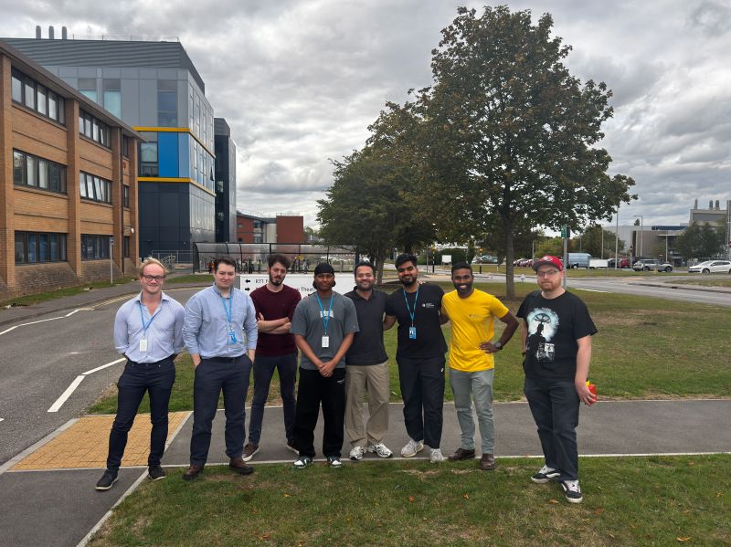
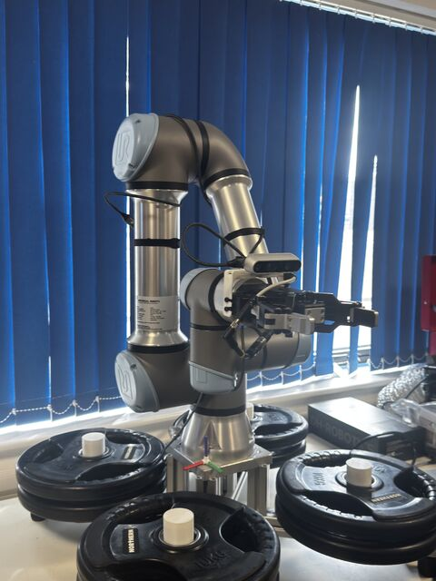
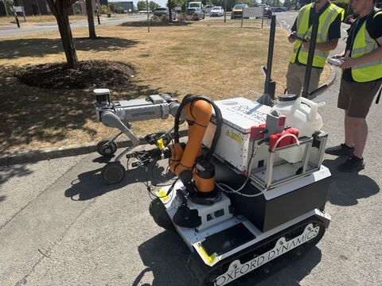
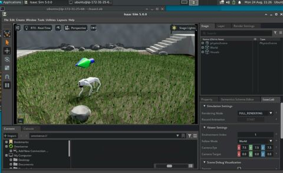
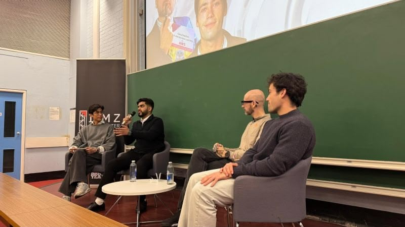
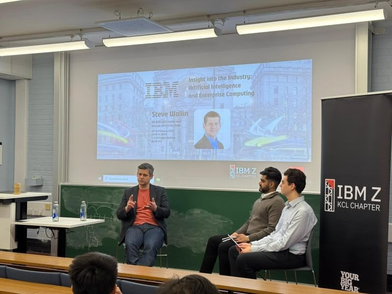

Visiting Student AI Researcher at Oxford Dynamics
Anmol Goyal.
Mathematics with Statistics at King's College London, working where maths meets robotics & physical AI. Currently researching liquid neural networks.
01Current Research
Final-year project · KCL × Oxford Dynamics · 2026–27
Liquid Neural Networks for robotics
Most neural networks see the world in fixed time steps. Liquid neural networks are continuous-time models: each neuron is a small differential equation whose time constant changes with its input, so the network can speed up or slow down how it reacts.
That makes them compact, causal and unusually interpretable, which matters for robots acting in a messy, real world. I'm exploring them for my final-year project with Oxford Dynamics' research division, supervised by Dr. Shireen Kudukkil Manchingal.
The liquid time-constant neuron
The hidden state x leaks back toward rest at a rate set by τ, while a small learned network f both drives it toward A and changes how fast it leaks.
So the time constant is "liquid"
Strong input makes f grow, so τ_sys shrinks and the neuron reacts faster. Quiet input lets it integrate slowly.
-
continuous time
Made for sensor streams
An ODE has no fixed step, so irregular or missing samples from real sensors fit naturally.
-
compact
Small by design
Expressive dynamics per neuron mean far fewer neurons than comparable deep models.
-
interpretable
Auditable control
Small, sparse circuits can actually be inspected, which matters when a robot is making decisions.
Further reading: Hasani et al., Liquid Time-constant Networks, AAAI 2021 · Lechner et al., Neural circuit policies enabling auditable autonomy, Nature Machine Intelligence 2020
02Robotics at Oxford Dynamics
In summer 2026 I spent 12 weeks at Oxford Dynamics on the Harwell Science and Innovation Campus as a Robotics Intern. I arrived as a maths student with no robotics background. I left having built a controller for a real robot arm and a simulated twin of it.
I'm now continuing as a Visiting Student AI Researcher, running my final-year project on Liquid Neural Networks in collaboration with King's College London and Oxford Dynamics' research division.
-
01
Arm mechanics
Learned the kinematics and mechanics of a 6-DoF robotic arm from the ground up.
-
02
ROS2 controller
Picked up ROS2 and MoveIt from scratch and built a controller for the arm.
-
03
Digital twin
Recreated the arm as a simulated twin in NVIDIA Isaac Sim.
-
04
Research
Saw the company's work on VLAs and VLMs, and now research Liquid Neural Networks.




“The part I didn't expect to matter so much: the gap between code you write alone for a university project and code that ships in a real codebase.”
On working in a team repo, to real engineering standards
03Experience
-
Sep 2026 — Now
Visiting Student AI Researcher
Oxford Dynamics · Harwell
Final-year industry research project on Liquid Neural Networks, in collaboration with KCL.
-
Jun — Sep 2026
Robotics Software Engineering Intern
Oxford Dynamics · Harwell
ROS2 and MoveIt control for a 6-DoF arm, plus a digital twin in NVIDIA Isaac Sim. Shipped work in a shared team codebase.
-
Jul 2025 — Jun 2026
IBM Z Student Ambassador & President, IBM Z KCL Society
IBM · King's College London
Represented IBM Z and mainframe technology on campus. Ran workshops and watch parties, grew a mainframe club, and hosted an industry speaker series with Amazon and IBM.
-
Jan 2025 — May 2026
Founder & President
KCL Financial Literacy Society
Founded a society teaching students practical finance, from budgeting to investing.
-
Nov 2025 — Sep 2026
Student Ambassador
King's College London
Subject Ambassador for Mathematics with Statistics and Online Events Assistant for global recruitment webinars.
-
Oct 2025 — Sep 2026
NMES Student Representative
King's College London
Selected to represent peers in the Faculty of Natural, Mathematical & Engineering Sciences. Turned survey data into recommendations for faculty.
-
Aug 2025
Online Incubator Participant
King's Entrepreneurship Institute
Developed and validated a startup concept through mentorship and workshops.
-
Aug 2024 — Jan 2025
Tech Volunteer
CodeYourFuture
04Leadership
Feb 2026 · Strand Campus, KCL
Industry speaker series with Amazon & IBM
As President of the IBM Z KCL Society, I spent months planning a two-day series on how AI is actually built and deployed in production. It ran with the KCL AI Society and KCL Quant Society. Day one brought Amazon on applied generative AI. Day two brought IBM on AI and enterprise computing.


05Skills & Education
Robotics & AI
- ROS2
- MoveIt
- NVIDIA Isaac Sim
- Physical AI
- Liquid Neural Networks
Maths & Programming
- Statistics
- Python
- pandas
- Java
- JavaScript
- React
- Git
Systems
- IBM Z
- LinuxONE
- Linux
Languages
- English
- Hindi
- Spanish (elementary)
2024 — 2027
King's College London
BSc Mathematics with Statistics · final year
Certifications
IBM Z Xplore — Concepts
IBM Z & LinuxONE Community Contributor 2025 (Level 1)
07 — Contact
Let's talk robots.
Always happy to connect and learn from more people. Drop me an email or a DM on LinkedIn.